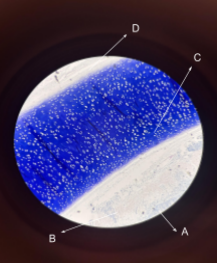
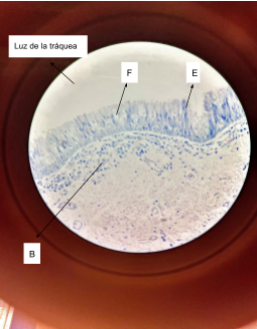

Inicio
En esta página vamos a explorar los distintos tejidos y órganos del cuerpo humano, entendiendo su estructura microscópica y función en el organismo.
- Piel: Epidermis, dermis e hipodermis, y sus funciones protectoras.
- Glándulas salivales: Acinos y conductos que producen y transportan saliva.
- Páncreas: Función exocrina y endocrina, digestión y regulación hormonal.
- Tráquea: Analizaremos un poco por encima la tráquea con unas observaciones.
- Hígado: Histología y función en el metabolismo.
Histología de la piel
La piel es el órgano más extenso del cuerpo humano y actúa como nuestra primera línea de defensa. Histológicamente se organiza en tres capas principales, que varían en grosor y composición según la zona del cuerpo.
Epidermis
Es la capa más externa, compuesta por un epitelio estratificado plano queratinizado. Es avascular y se nutre por difusión de la dermis. Se divide en:
- Estrato Basal: Contiene melanocitos y células de Merkel.
- Estrato Espinoso: Contiene células de Langerhans.
- Estrato Lúcido: Presente solo en piel gruesa.
- Estrato Córneo: Capas de corneocitos que se descaman continuamente.
Dermis
Es la capa media, compuesta por tejido conjuntivo rico en colágeno, fibras elásticas, vasos sanguíneos y nervios. Se divide en:
- Dermis Papilar: Nutrición de la epidermis y sensibilidad táctil.
- Dermis Reticular: Aporta elasticidad y resistencia.
Contiene folículos pilosos, glándulas sebáceas y sudoríparas, y corpúsculos sensoriales (Meissner y Pacini).
Hipodermis / Tejido Subcutáneo
Capa más interna, formada por tejido adiposo y conjuntivo laxo. Función: almacenar energía, aislar térmicamente y proteger de impactos.
Glándulas salivales
Órganos exocrinos encargados de producir saliva, que ayuda en la digestión, lubricación y protección de la cavidad oral. Están formadas por acinos y un sistema de conductos que transporta la saliva a la boca.
Adenómeros
- Acinos serosos: secretan proteínas y enzimas digestivas (amilasa).
- Acinos mucosos: producen moco para lubricación.
- Acinos mixtos: combinación de serosos y mucosos.
Sistema de conductos
- Conducto intercalar: conecta acinos con conductos estriados.
- Conducto estriado: regula la composición iónica de la saliva.
- Conducto excretor: transporta la saliva hacia la cavidad oral.
Estas glándulas también participan en la defensa inmunológica gracias a la presencia de células linfoides en sus tejidos.
Histología del Páncreas
El páncreas es un órgano con función exocrina (digestión) y endocrina (regulación hormonal).
Componente Exocrino
- Acinos pancreáticos: producen enzimas digestivas (amilasa, lipasa, tripsina).
- Células acinares: sintetizan y secretan las enzimas.
- Células centroacinares: conducen la secreción hacia los conductos pancreáticos.
La secreción pancreática exocrina se libera hacia el duodeno y es esencial para la digestión de carbohidratos, grasas y proteínas.
Componente Endocrino
- Células alfa: producen glucagón para aumentar la glucosa sanguínea.
- Células beta: producen insulina para disminuir la glucosa sanguínea.
- Células delta: producen somatostatina que regula otras hormonas.
Los islotes de Langerhans forman el componente endocrino y están dispersos entre los acinos pancreáticos.
Histología y Citología del Aparato Respiratorio
La función principal del aparato respiratorio es el intercambio de gases entre la atmósfera y el sistema vascular, para aportar oxígeno y retirar el CO₂ de la sangre.
Tráquea
Histología
La tráquea se encuentra revestida por un epitelio cilíndrico pseudoestratificado ciliado con células caliciformes. En la submucosa existen glándulas seromucosas. Por debajo aparecen anillos de cartílago hialino y posteriormente una capa adventicia.
Citología
- Células basales
- Células cilíndricas ciliadas
- Células caliciformes
Observaciones microscópicas
Imágenes microscópicas
Objetivo 4x
Objetivo 10x
Objetivo 40x

Histología del Hígado
El hígado está organizado en un parénquima glandular sólido de origen epitelial, estructurado en unidades morfo-funcionales altamente organizadas, cuya función principal es fabricar y secretar sustancias.
Lobulillo Hepático
El hígado se divide en lobulillos de forma prismática hexagonal.
- Vena Centrolobulillar: Situada en el eje longitudinal del lobulillo, origen del sistema de venas hepáticas que drenan hacia la vena cava inferior.
- Triada Portal (Espacio de Kiernan): Ubicada en los ángulos del hexágono dentro de un estroma de tejido conjuntivo laxo, contiene:
- Rama de la arteria hepática: epitelio plano simple.
- Rama de la vena porta: epitelio plano simple con luz amplia.
- Conducto biliar: epitelio cúbico simple.
Hepatocitos
Células grandes en forma de cubo encargadas de producir bilis, almacenar glucógeno y lípidos, y desintoxicar la sangre.
Sinusoides Hepáticos
Capilares amplios formados por epitelio fenestrado que permite el intercambio de sustancias entre la sangre de la vena porta y la arteria hepática, ubicados entre los cordones de hepatocitos.

Espacio de Disse
Espacio entre el epitelio de los sinusoides y los hepatocitos, donde ocurre el intercambio de nutrientes.